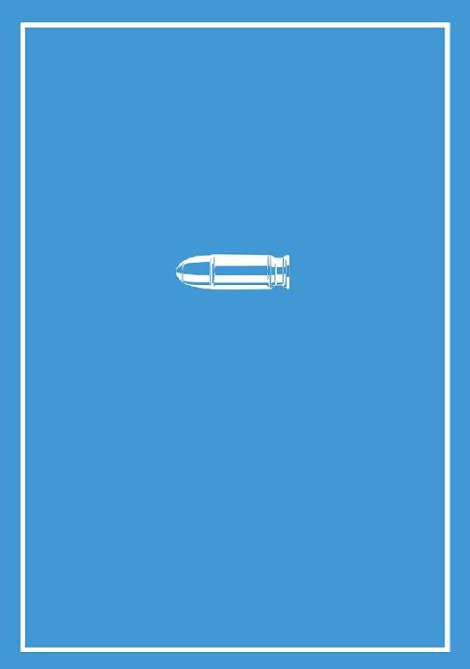

| そのたま！ その銃弾が、確かにセカイを変えたのだ 犬吠埼ナイン構想 (電子書籍普及委員会) | |
| 犬吠埼一介 | |
| (2017) | |
犬吠埼ナイン構想 三番目の章作品
小説：犬吠埼一介
イラスト：芳村拓哉
その国は、海のきれいな土地柄であった。
海べりに建てられた簡素なアパートメントの一室で、少しだけ開いた窓の隙間から吹き込んでくる風を浴びながら、ニコルは、目の前に広がる静かな海原を眺めていた。
曇天。波はほぼ凪いでいる。まるで大きな人の両腕が抱き抱えたような形の、左右から囲むように張り出した岸壁によって外洋と隔てられた、広くて穏やかな内湾だった。
遠く、砂浜のほうを海鳥が何羽かぐるぐると飛び回っている。夕方だけあってまばらだが、海のそばで働く者たちが、その日の労働の後片づけに勤しんでいるのが見て取れた。
港湾国家エルメデ。国民のほぼ大半が漁業活動に従事している小国である。海からの豊かな恵みによって、彼らは日々の暮らしの糧を得ているのだった。
バルコニーの窓際から離れると、ニコルは、部屋に備えつけの小さくて簡素なダイニングテーブルの椅子に腰掛けた。ひっそりと静かな室内に、椅子の引きずられる音が響く。背もたれにゆったりと身を投げ出しながら、彼はテーブルの上のコンピューター端末に手を伸ばした。すでにしばらくの間、そうして端末に向き合っては、窓の外を気晴らしに眺めることをくり返しているのである。
ファンが回転する鈍い音が響き、機械が待機状態から回復していく。小さなモニターに文字が浮かび上がるのを確認すると、キーをすばやく叩いていった。
エルメデの経済の基幹部分を担っている、港湾での漁業労働。その日々の業務の役割分担を効率的に処理するための就労管理システム画面が表示される。ニコルが端末を操作すると、画面の表示が次々と入れ替わっていった。港湾エリアの清掃業務。外洋で漁獲された魚介類の缶詰加工業務。等々。何の変哲もない、エルメデで暮らす者であれば一度は経験したことのあるような各種の労働が並んでいる。ニコルは、画面を切り替えては凝視する地道な操作をしばらくくり返していった。
どこにも、異常は見当たらないようだった。こうして見る限り、窓の外ののどかな風景も、港湾の労働の割り振りも、いつもと変わらない日常のなかで動いている。何も問題はないのだ。彼があえて非日常的に動かなくてはならないほどのことなど、何もない。
だが。やがてひとつの画面を表示させたところで、ニコルの手が止まった。画面をじっくりと見て、内容を確認する。臨時に登録された、見慣れない最新の業務募集情報のひとつが、彼の注意を引いていた。国家といいながら全体ではひとつの大きな街でもあるエルメデの、統治管理のためのエリア。アーキテクト領域と呼ばれる場所。その一般市民は立ち入りを厳しく制限されているエリアに隣接する区域での、公共建築物の修理業務だ。
窓から、相変わらず、風が吹き込んでいた。ニコルはその潮の香りを含んだ風を心地よく感じながら、しばらく、椅子の背もたれにもたれ掛かって目を閉じていた。そして、身体を起こすと、画面を操作し、該当の業務の詳細情報を表示させた。
若干名から１０名程度の募集。ガス伝達配管の老朽化に伴う故障の修理。緊急案件につき急募。そうした募集だからといわんばかりに、報酬はかなりの高値に設定してあった。
問題はその建物の場所だ。ニコルの記憶によればそこは、アーキテクトたちの居住区と、統治管理区域とを結ぶ高架鉄道の、通り道に当たる。エルメデの地理は頭に叩き込んであるから間違いない。漁業活動に従事しているほとんどの人間であれば、その募集を見ても何ら違和感を覚えなかっただろう。
ニコルは、「募集中」の項目を選択し、完全に暗記しているアカウント情報を瞬時に叩き込むと、そのアサインを確定させた。これで、エルメデ全土の労働需要と供給を適切に管理している就労管理システムによって、業務への参加から報酬の支払いまでのフローが自動的に管理されることになる。
続けて、端末を操作した。メール送受信のツールを起動する。短い文章を打ち込むと、送信ボタンを押した。メールが送られたのを確認すると、ニコルは再び立ち上がり、キッチンの隅でぬるくなっていたマグカップのコーヒーを手に取り、飲み干した。窓の隙間から、潮騒の音が小さく響いてくる。そんな、のどかな夕刻でありながら、彼は、日常性という守るべき規律を妨げる、小さな不協和音をはっきりと認識していた。
前略 港湾労働組合第三課 ヨルテ殿
労働管理システム上の募集情報を詳細に検索したところ、かねてよりの懸案を思わせる情報が該当しました。すぐに現場を調査し結果を報告いたします。 調査官 ニコルより
雑踏。大勢の足音や声がこだまして、一体となった心地よい騒音を作り出している。エルメデの街中を貫く大通りを、ニコルは慣れた足取りで歩いていた。
港湾都市だけあって、昼間のこの時間帯は、港で働く大勢の老弱男女が、ひっきりなしに道を行き来しては、それぞれの用向きを忙しそうに果たしている。活気のある雰囲気が、道行く人々の表情を明るくしていた。時々、フォークリフト車両によって運ばれる、大きなコンテナが通る。人々は慣れたもので、声を掛け合ってすばやく道をあける。エルメデの主たる輸出品である、魚介類や甲殻類の缶詰が、リフトには山と積まれていた。
そう、いつもの、街の光景だ。何も変わらない。どこもおかしくない。今のところは。ニコルの姿を見掛けて、慣れ親しんだ間柄の労働者仲間がたびたび声を掛けてくる。ニコルはにこやかに応じながら、街のそこかしこを眺め、懸念されている非日常的な変化が潜んでいないかどうか確認していった。
海岸線から少し奥まった辺りの、広々とした平地を開拓して作られた、労働と生産のための地区である。アーキテクトたちによって管理されたそこは、近代的で清潔な労働環境として整備され尽くしているといえた。
役割分担ごとに分かれた大勢の若い男女たちが、漁獲された原料から、最終的な生産物に至るまでの中間行程を、きびきびとした動作で精力的にこなしていくのを眺めながら、ニコルは、その壮観な光景を好ましく感じた。美しいとすら思う。ここには、働くための場所が確かにあり、人々はそこで、慎ましくも豊かに暮らしていけるのだから。
折しも、労働と労働の合間の、一時の休息の時間となった。エルメデの労働区画で働いていた大勢の労働者たちが、手を休めると、笑顔と雑談を交わしながら、身体を伸ばす。誰からともなく、同じ歌が広がっていった。労働を賛美する、喜びの歌。エルメデで生きる者たちの誇りとなっている歌声が街に響きわたる。ニコルも立ち止まり、その鼓舞するように勇ましいリズムに唱和した。短い歌だ。すぐにまた、街にいつもの騒々しさが戻ってくる。それを合図にして、労働者たちはまた、それぞれの作業に戻っていった。
ふと視線を上げると、エルメデを統治するアーキテクトたちが働いている区画と、郊外の彼ら専用の居住区とを結ぶ高架列車が、ひっそりと、労働者たちの高揚とはやや距離を置くようにして、彼らの視界の外を移動していくのが見えた。それもそうだろう。アーキテクトたちの生活、日常は、それ以外の者たちにとっては、それほど緊密には交わらないものなのだから。少なくとも、港湾で働く労働者たちにとっては。
だが......ニコルは、やや離れた場所で、彼自身と同様に、アーキテクトたちの列車が高架線を通り過ぎるのを、顔を上げて眺めている者がいるのに気づいた。この、彼らが高揚のもとに唱歌したばかりのタイミングで。列車の通り過ぎるのを、見ている者がいる。不信感が、彼の警戒心を刺激する。もっと詳しくその人物を確かめようとした。だが、その動作は一瞬のものであったためか、ニコルは彼を雑踏のなかに見失ってしまった。
たまたまに違いない。この、愛すべき日常の日々を侵害しようなどと企む者が、エルメデの街中にそうそうありふれているはずがないのだ。ニコルは気を取り直して、彼の目的地へと向かった。
海岸線から距離を経るごとに、標高が増していく。アーキテクトたちがエルメデの統治を行っている専用区画は、背後にそびえる山の頂きを背にして、港湾から海の先までを見下ろせる高みに位置していた。街全体を視覚的にカバーできるこの場所は、それほどの広さがないため、彼らは山の麓に居住区を持っている。日々、高架鉄道で山を登り、統治のための地区まで通っているのだった。
ニコルが現地に到着すると、すでに何名か集まっていた労働者たちのうち、顔見知りの者が、気さくに声を掛けてきた。
「よぉ、ニコルじゃないか」
「目ざといな。高給に惹かれてきたか？」
「まあな。俺も運がよかったよ」
何気ない風を装って、そんな言葉を返しながらも、抜かりなく周囲を観察する。その場所は、高架鉄道の架線に隣接する、比較的中規模の貨物倉庫だった。
港湾労働地区で生産された缶詰などの品が、輸出されるまでの間の一定期間、低温で貯蔵されている場所。倉庫で使用される様々な電力需要を賄うために、敷地の一角にあるガスタービン発電器が稼働している。だが、配管の故障により、現在はその電力供給に一部支障が生じており、その対策のために労働者たちが集められたというわけである。
ニコルは、仕事の準備にかこつけて彼らから離れると、建物の中に入っていった。彼以外のメンバーの視界から隠れると、即座にすばやい動きに切り替えて、周囲に異常がないか確認していく。といっても、広い倉庫に、彼ひとりだけの探索だ。時間も限られている。復旧作業が開始されれば、姿を隠しているのにも限度があった。
「誰なんだ。何を企んでる......？」
数日前に、依頼者のヨルテが伝えてきた、ある懸念。エルメデの平穏を乱す行為が現在進行形で画策されている可能性があるということ。未だ姿の見えていない策謀を、ニコルは忌々しく思った。愛すべき街の平穏を、乱すことは許さない。そんな思いとともに、建物の地理的な要因から想定される異常事態を探して建物内を点検していく。一見、何もないかのように見えた。
だが......。彼もプロだ。しばらく巡回するうちに、あるひとつの変化に気がつくと、その場所にうずくまり、詳細に確認した。床と壁の、ある部分。本来であれば有り得ないほど、その付近の床に足跡の痕跡が散在している。不自然さが感じられた。埃が積もっていたはずの地面が乱れている。新鮮な、湿った泥が、散らばっている。ガスタービンエンジンの燃料が伝搬されている配管が通る一角。ニコルはそっと、壁に作りつけられた点検用のパネルを動かして、内側を見た。
思った通りだ。雑な仕事でありながら、それなりの手際で、簡易な起爆装置が、ガスの配管の接続部分に縛りつけられている。解除の妨害を真剣に考慮していない、シンプルな構造の爆発物だ。ニコルは内心で胸をなで下ろすと、すばやく装置の配線を指先でたどり、躊躇なく、一本のケーブルを引きちぎった。何も起こらない。それはそうだ。起こっていたら一大事である。仕掛けられていた装置の起爆は妨害され、すでに無力化されたのだ。
バックパックに、配管から取り外した装置をしまうと、ニコルは元あったように、つまり、装置を仕掛けた痕跡すら残らないように現場を片づけた。そして、何事もなかったかのように建物の外へと向かう。この間、１０分と経っていなかった。
それでも、重要な施設だけあって、労働者のなかでもベテランの者たちが現場を警備しているため油断はできない。ニコルは、配管の修理業務以外にこの場には何の用もない、という風で、通路を行き来する警備員を何人もやり過ごすと建物の外に出た。ちょうど、復旧作業の開始されるタイミングだった。
「どうした。早くしろよ」
「すまん。ちょいと用足ししてた」
ニコルたちは、表向き用意されていたガス管故障の復旧という作業を開始していった。ニコルの手荷物に含まれている、時限式の起爆装置。これが解除されたことは、すぐに、仕掛けた何者かに伝わるだろう。いずれにしても、任務完了である。
「あっけなかった、といえば、それまでだな......」
自分だけが見て、対処を済ませた件以外には、特に異常は見当たらなかった。故障修理の業務を発生させるために偽装的に仕組まれた「ガス管の故障」を淡々と修理しての、帰り道である。
修理業務に加わった者たちはそれぞれ、イレギュラーな業務にアサインして高給を受け取れたことに喜びながら、三々五々に帰っていった。いい気なものである。破壊活動を行った「何者か」は、明確に、彼らの修理の不手際をこそ、事件の直接の要因にしようとしたというのに......。
だが、そうした問題に対処することが、ニコルが日々、労働者たちのなかにいながら、ヨルテの組織の一員でもあるという二重生活を送っている一番の目的である以上、彼はもうそれ以上の疑問は抱かなかった。難しいことは何もない。不穏な試みは排除する。それだけなのだから。
ふと目を上げると、通りの反対側を、ひとりの女が急ぎ足で歩いてきていた。若い女だ。やや小柄で、ほっそりとしており、それでいて肢体のバランスはよく、全身からみずみずしさが感じられた。おおよそ、労働者の街であるエルメデには似つかわしくないような美女だ。物思いに耽っていたニコルが、目を奪われ、現実に注意を引き戻されるほどの存在感が、彼女にはあった。
何か、うまくいかないことでもあったのだろうか。まるで、自分自身が仕掛けた爆発物が、想定通りに起爆しなかったので、慌てて現場の様子を確かめに行こうとしているようだったので、ニコルは一瞬、目を細めたが、すぐに、そんなはずはないと自らの早急な考えを一笑に付した。
女が、真横を、通り過ぎる。間際で見る、その美貌、伸びやかな脚線美に、どうしても目を奪われてしまう。すぐさま、微かな残り香と、さらりとした長い髪の先端を視界の端に残して、彼女は去っていった。
あえて、振り切るように、彼自身の目的に意識を集中すると、ニコルは足を早めて、エルメデの街へと向かった。
少し後。郊外のバーで、ニコルはひとりで酒を飲んでいた。騒然とした店内では、その日一日の労働を終えた労働者たちが、それぞれ楽しげに振る舞い、酒を飲んでは英気を養っている。煙草の煙とクラシカルな音楽が、年季の入った建物に満ち満ちていた。小さくても賑わいのある店の片隅のカウンターで、ひっそりと酒を飲むのが、彼の密かな楽しみだった。
そんな、いつもとさして変わらない、エルメデの労働者としての自分が過ごす日常の時間は、長くは続かなかった。彼のもうひとつの領域......労働組合第三課、つまり、人知れず、日常性を侵害する者や動きを探査する組織の、調査官としての部分が、小さな異常を敏感に感じ取ったのだ。
まったく。落ち着いて酒も飲めやしない。ニコルは、外見からはまるで、何かに気づいたということすら感じさせないながらも、自然な一連の動作で、斜め後ろに固まって座っている男たちの集団に視線をやった。
あるキーワードが、彼の注意を引いたのだ。見ると、周囲の労働者たちと取り立てて違わない風体ながら、その表情は険しく、何事かに苛立っているようだった。頭を寄せ合うようにして何かを話し合っている。いったいどうして......失敗......誰かが......。そんな、聞こえるとも聞こえない声を頼りに彼らを観察する。彼らの外見。特に改変が不可能な素顔や背格好、動作と声色の特徴などをセットで頭に叩き込むと、ニコルは何気ない風に席を立ち、会計を済ませて店の外に出た。
このままでは終わらないだろうな......。そんな確実な予感が頭をよぎった。忙しくなるだろう。歓迎はできないが、俺は、やるべきことをやるだけだ。アパートメントへ向かいながら、ふと、頭上を見上げた。だんだんと寒くなってくる季節だけに、夜空が澄んでいて、満月が空の中ほどの高さに浮かんでいた。雲は少なく、見渡す限りの星空が広がっている。その美しさに見惚れながら、そっと吐き出した息が、白く曇って、一瞬後には消えていった。
「失敗しただと？ いったい何をやってる」
大柄の、厳めしい表情の男が、そう、大声で叱責した。さして広くない執務室の中。彼の前で頭を垂れているのは、ひとりの女だ。やや小柄で、ほっそりとしていて、長くてきれいな髪をひとつに束ねている。若さゆえのみずみずしさを全身にたたえていて、それでいて、豊満な肢体には、通り過ぎるだけで、健全な男性なら思わず目を奪われてしまうほどの確かな魅力があった。
「ごめんなさい......。仕掛けは万全だったの。でもどうしてか起爆しなくって」
「馬鹿な。そんなことが勝手に起こるものか。不手際があったか、邪魔されたかだ」
そう言いながら、ビルドは苛立ちを隠そうともせず、レシカの前をどしどしと大股で行ったり来たりしつつ考えを巡らせていた。
「不審な様子はなかったのか？」
「それが......」
「どうした。言ってみろ」
ビルドが促すと、彼女は、恐る恐る、といった様子で核心を切り出した。
「持ち去られていたの」
「何だと？」
「仕掛けたはずの爆弾が、確認しに戻ったらなくなっていたわ」
驚きとともに彼女の発言を理解すると、ビルドは、深刻な表情でしばし思案した。どういうことだ。この俺の計画を、知っている者がいる。ひとりなのか、それとも......。
「いいだろう。それならそれで、こちらにも考えがあるからな」
「どうにかなるのね？」
ビルドが、失敗した計画の件をさほど気にしていないように見えたので、意気消沈していたレシカは表情を明るくする。ビルドは鷹揚にうなずいてみせた。そうだ。どうにかなる。俺の計画を邪魔しているのが誰かは知らんが、それは俺じゃない。
「ああ。目にもの見せてやるさ」
「さすがね、ビルド！」
レシカがそんな風にして、彼をおだててみせる。にやりと微笑むと、彼はいつものようにして、自らの展望を語り出すのだった。
「アーキテクトたちのやり口にはもううんざりだ。俺たちの労働から、さっくりと上前だけ搾取しやがって。今に見てろよ。俺たちに賛同する奴らは増えてるんだ」
逞しくて精力的な顔つきを、エルメデを支配している者たちへの敵愾心で歪ませながら、ビルドは力強く気を吐いてみせた。
エルメデを支配しているアーキテクトたちの、選民的で優雅な暮らしぶりはどうだ。日々、港湾で労働する者たちと比べれば、その違いは明らかだろう。
「やっぱり、実行するんだ」
「楽しみだろ？」
目を輝かせてレシカが問うと、ビルドは彼女の頭に手を置き、撫でてやりながら、当然だろという風に答えた。心地よさそうに目を細めるレシカを軽く抱き寄せる。すでに次の手は打ってあるのだ。彼は、企みが表面化するのを想像しにやりと口元をつり上げた。
エルメデの労働者たちの日々の勤務を円滑に処理するための組織、港湾労働組合では、今日も雑多な業務が粛々と行われていた。
三階建ての赤煉瓦の建物。広々とした部屋を貫いて、何列も並べられたテーブルに座った職員が、廉価でありながら使いやすいコンピューター端末に向き合い、手慣れた様子で作業をしている。ニコルはその光景を見るともなしに見ながら、第三課のある最上階へと階段を上っていった。
長い廊下。他の執務エリアと、それとなく隔離された一角がある。ここを知っているのは、別段限られた人間というわけではない。ただ、その仕事の内容に、若干の秘匿性があるだけである。木を隠すのは森の中がいい。その典型的な例であるといえた。
ニコルがフロアに顔を出すと、いつもと同じようにして、ヨルテがそこにいた。何の変哲もない作業服を着て。彼の風貌もまた、雑踏に紛れてしまえば探すのに戸惑うような、ひとりの特長のない中年そのもののようだ。そんな彼が、顔を上げると、にこやかに迎えてくれた。
「終わったかね？」
「はい。何も問題はありませんでした」
「そりゃあ、よかった」
うんうん、とうなずきながら、彼は、ニコルが鞄から取り出してテーブルに置いた爆発物のほうを、軽く一瞥した。
「で、誰の仕業なのかね？」
「調査中です。ただ、街中にもすでに、関係者がいる気配がします」
「そりゃ、困ったね、どうも」
「はい。私もそう思います」
会話が途切れた。ヨルテはしばし、思案するようにしていた。その表情から、ニコルはふと、質問を試みた。
「何か、心当たりがあるのですか？」
そんな、意外な質問に、ヨルテは、驚いたような表情で、ニコルを見返してみせる。だが、ニコルが彼のほうから目をそらさず、続きを期待しているのを感じ取ると、おもむろに言葉を続けた。
「あるよ。君には話していなかったが。ビルドという男だ。別の用向きで、組合にもよく来ていた」
「別の用向き、ですか」
「ああ。特に資金面でね。労働者たちの待遇を向上させるための互助会のようなものを組織したいと言っていた」
ニコルは、その話題と、今、テーブルの上にある爆発物との関連性を考察しながら、言葉を選びつつ返してみせた。
「それで、彼は」
「どうなったと思う？」
ニコルは、ため息をついて顔を伏せた。繋がりは明白だ。ある男が、真の目的を隠して資金を集め、そして、自らの邪な野心を満たすために、行方をくらませたのだ。その輝かしい成果の一端が、ここにあるというわけである。まったくもって許し難いことである。
「足取りはたどれなかったのですか」
非難とも苛立ちとも取れるニコルの口調に、やれやれ、といった表情で苦笑しながら、ヨルテは肩をすくめてみせるのだった。
「彼らはすでに少数ではない。手引きをしている者たちがいるんだよ」
「まさか......ここはエルメデですよ？」
「そのまさかが、起こりつつあるのだ。だから君に、引き続きの対策を依頼したい」
いつになく厳しい表情で、ヨルテが彼のほうを見ているのに気づくと、ニコルは居ずまいを正した。
「もちろんです。任せてください」
「期待しているよ」
そう、素っ気ない風に答えるものの、それがヨルテの流儀なのだと知っているニコルに動揺はなかった。
「銃の携行を許可する」
「......了解しました」
おもむろに、すでに用意してあった分厚い封筒を、ヨルテが机の引き出しから手早く取り出すと、ニコルに手渡した。ニコルはそれを受け取ると、何事もなかったかのように鞄の中に押し込んだ。
「では。エルメデの繁栄のために」
ニコルが、第三課正式の敬礼をすると、ヨルテも端末に目をやりながら応じてみせた。その非日常的なやり取りに、何となしにおかしさを感じつつも、ニコルは彼の前を辞すと、再び長い廊下を折り返して、外へと向かった。彼の鞄にあった爆発物は、今度は拳銃となっている。その事実が、重量感を伴ってニコルの警戒心を刺激していた。
組合の建物を出て、大勢の労働者が立ち働いている区画に戻ると、ニコルはアサインしておいた本日分の業務に参加しようとした。
だが、見逃すまでもなく、大通りの一角に近づくにしたがって否応なく耳に入ってくる騒動があった。何事かと、近づいて確認する。何人かが、路肩に積まれた木箱の上に乗り、大声で周囲を煽動しているのだった。
「エルメデの労働者諸君！ アーキテクトたちの横暴を許してはならない！」
「日々、疑問もなく、ただ働いている君たちはそれでいいのか！」
叫んでいる者たちは、いったいどこで習得したのか、なかなかのアジテーターぶりを発揮している。周囲を囲んでいる労働者たちは、今のところ、そんな彼らの様子を、退屈しのぎに、うさんくさそうに、あるいは物珍しそうに眺めているだけのようだった。
デモを行っているメンバーたちと、ニコルは特に面識はない。だが、ヨルテとの会話を合わせて考えれば、彼らこそがビルドの一味であろうことは明白だった。散発的な行動のようにも見える。エルメデの風土を考えれば、彼らのやり方は支持を集められないのではないだろうか......。だが、そうした油断がどんな事態を招くか分からない以上、安易に看過するわけにもいかなかった。
「アーキテクトたちは、我々労働者が生み出した生産品の売却額を、不当に搾取しているぞ！ その具体的な証拠を見たくないか」
周囲の労働者たちに、ざわめきが広がっていく。彼らが日々、加工して輸出している生産物に関わる具体的な話に、興味を惹かれる者が出てきたのだ。反応に気をよくした語り手は、さらに勢いづいて、聴衆を呑まんとばかりに意気揚々と言葉を続けた。
「アーキテクト側が管理するエルメデ中央銀行の関係者から、我々が秘密裏に入手した情報がある。対外貿易による収入額が、我々の知っている規模と大幅に違うのだ」
何だと、どういうことだ、という風に、労働者たちに疑念が広がっていくのを感じて、ニコルは若干の動揺を隠せなかった。銀行の内部資料から情報を不正に得られるというなら、彼らは予想以上に情報収集能力に長けているのだろう。いい筋だ。「その情報」は確かに、彼ら労働者たちに知られて、好ましい類のものではない。今から取って返して、ヨルテに報告したほうがいいだろうか。
「何だって？ 俺たちの労働の対価は正当なものじゃなかったのか！？」
「そんなことは許されないぞ！」
「そうだ、そうだ！」
今や、聴衆のなかからも、彼らのアジテーションに呼応する者が現れ出していた。そうした同調者をよく観察すると、自然にそうしているというよりも、あらかじめ仕組まれた、偽装の同調のようにも見える。周到な工作じゃないか。基本的に平穏なエルメデにおいて、これほどの騒ぎを急に起こす手腕に、ニコルはむしろ感心していた。
ふと、煽動者のひとりと目が合う。当然、向こうも聴衆を観察しているだろう。ニコルは慌てて、何事もなかったかのように無関心な聴衆を装うと、その場から離れていった。
さらに困ったことになった。問題の騒動から距離を置くように離れてはみたものの、その彼の動きを阻むかのように、先日すれ違ったあの女が現れたのだ。
何かの間違い......ではない。明らかに、挑発するような視線で、こちらを見ている。思わず、手のひらに汗が浮かぶのを感じた。
「先日は、どうも。お世話になったわね」
そんな風にして、堂々と話し掛けてくる。応じないわけにもいかない。
「何だよ......世話って何のことだ」
思わず、そうして回避しようとするも、目の前の女は追跡してくる。
「とぼけないでね。私が、せっかく仕掛けた装置を、あなたが解除した」
「......言うじゃねーか。いいのかよ、バラしちまって」
ニコルは、そんなあけすけな彼女の態度に焦りを感じていた。どういうことだ？ もはや自分に対しての彼らの秘匿性は必要なくなったということか。なぜだ。
「私たちはすでに行動を起こした。もはや、止めることは不可能だからよ」
目の前の女は、ニコルの疑問を読み取ったかのごとく、自慢げにそう言った。
「行動？ いったい何をした。高架鉄道の爆破なら失敗したくせに」
「あれは、単なるデモンストレーション。実際にはね。インパクトの問題よ」
インパクトといえば、目の前の女の身体にもインパクトがあった。ニコルを、ではないのだろうが、まるで挑発するかのように、魅惑の肢体を見せつけるような服装をしている。美貌は言わずもながだが、ほっそりとしていながら、出るところは出ている、抜群のスタイルだ。ニコルははっきりとした苛立ちを感じながら、同時に、それが、目の前の女がビルドのものであるという歴然とした事実に起因していることに気づくと、恐怖した。
俺の、馬鹿め。任務だ。任務を完遂しろ。彼女のみずみずしいふともも周辺をさまよっていた視線を強引にそらす。ビルドめ。会ったことはないが恐ろしい爆弾を遣わしてきやがる。油断のならない敵だな......。
「なるほど。じゃあ、もう隠さないわけだな、お前......たちは、いろいろと」
「レシカよ。エルメデは変わるわ。あなたたちは、ただそれを、黙って見ているのよ」
「ふぅん。俺はニコル。俺は別に、何も変わらなくていい。今のここが好きだがな」
「アーキテクトの犬だもの、あなたは」
長い髪をさっと手で払いながら、彼女は、そんな風に言い捨てた。まるで、目の前に立っているニコルにも、彼が守ろうとしている日常にも、何の価値もないといわんばかりである。しゃくに障る女だった。
「じゃあなぜ俺になんぞ会いにきた」
「別に。爆弾のお礼がしたかっただけよ。勘違いしないでね」
そう言って、ひらひらと手を振ると、彼女は彼のことなどお構いなしですたすたと歩いていってしまった。
何となく、彼女の後を追いかけていった......というわけではなく、あることを予測したからなのだが、ニコルが遠くから監視するなかで、その通りのことが起こっていた。
恐らくは、デモ騒動はその他の場所でも同時並行的に行われていたのであろう。街のそこかしこから集まってきた、少なくない聴衆たちが、広場に集結している。そして、その中央、一味たちに囲まれるようにして立っている男女......レシカに、そう、あれがビルドか。初めて見るその精悍な容姿と表情に、ニコルは腹に力を入れて向き合った。
ここで気圧されてはならない。踏みとどまらなくては。先ほどから散発的に行っていた内容をくり返すようにして、彼らは効果的に聴衆を煽動していた。中央銀行の関係者から得られたという、具体的な証拠。エルメデの貿易の収益が、実際よりも極端に多いという話題のもつ力が、そして、ビルドとレシカという二人の際立った存在感が、エルメデの労働者たちの心を、日常から非日常へと引き寄せていく。ニコルは思わず歯噛みした。
ふと、ビルドが、ニコルのほうをはっきりと見た。遠くではあったが、お互いに、視線がぶつかったのをはっきりと認識する。忌々しそうに顔をしかめたニコルに対して、ビルドはといえば、口元を大きくつり上げ、鷹揚に笑ってみせるのだった。
ニコルは、その勝ち誇ったような笑顔に嫉妬した。彼の表情は、雄弁にも、語っていたのである。どうだ、いい女だろう、と。エルメデの争乱が既成事実化していくなかで、ニコルは、視線の先にいる男と、不可避の運命で結びつけられたのを感じた。
「本当に大丈夫なのぉ？」
エルメデのとある場所。まだニコルが探し当てていないアジトの一室で、ビルドは、大きなソファにどっしりともたれ掛かり、レシカを膝の上に乗せて、計画の進捗を、その手応えを確かめていた。手応えといえば、時々、思い出したように、レシカの豊満な胸や、脚の付け根をまさぐっている。ニコルが目撃したなら目を回すような光景だった。
「アーキテクトに喧嘩を売ろうってわけだからな。本来なら一筋縄ではいかんよ」
自らの計画に絶対の自信を持っているからこその態度。レシカは、ビルドに身体をもたせかけながら、その力強さに心酔していた。
「今に見てろ。奴らの欺瞞を暴いてやるよ」
「ふふっ。期待してるわよ」
「おうよ」
ビルドが、そう答えながら、レシカの肢体に手を這わせる。彼女は艶めかしげに小さい吐息を吐き出しつつも、ビルドの手を拒みはしないのだった。
「このままじゃ、俺たちは一生どうにもならん。生まれたと思ったら缶詰を作ってましたってか。冗談じゃないぜ！」
普段、周囲に余裕を見せつけるスタイルの彼にしては珍しく、抜き身の怒りと憎しみを顔に表していた。
エルメデの生産地区。大勢の労働者たちが、楽しげに立ち働いている。老若男女がともに、役割を分担しあって。アーキテクトたちが管理する大規模な漁船が、湾の外から運んでくる、大量の漁獲物。魚や、甲殻類の類を、彼らは熱心に処理しては、缶詰などの加工品へと仕上げていく。大量の生産物が、日々、港から外の世界へとコンスタントに送り出されていくのだった。
「よぉ。相変わらず精が出るな」
「何てことないさ、これくらい。それっ」
大勢の労働者たちが、働く。生産品が生み出される。外の世界から運ばれてきた漁獲物が、輸出品となって送り出されていく。そんな、愛すべき日常。ニコルには、どうしてそれが、非難されるべきなのか分からない。
(けっ。ご大層に。何が革命だよ)
「どうした？ 手がお留守になってるぞ」
「ああ......別に何でもない。大したことじゃないよ」
アーキテクトの設計した巨大なベルトコンベアのラインを、無数の缶詰が流れていく。さながら、鉄の川のように。そのひとつひとつが、彼らの労働の成果であり、実りなのだ。そしてその努力は、海の向こうの世界での、誰かの笑顔に、きっと繋がっている。
ニコルは、力を込めて、目の前の労働をこなしていった。愛すべき日常を揺るがす者たちを許さないという決意を込めて。
人払いをしたアジトの中。ベッドの上で、ビルドとレシカの身体が、絡み合っていた。彼女の汗で湿った肢体を。その形のよい胸も、すらりとした長くてきれいな脚も。存分に、ビルドの手が蹂躙していく。普段はひとつにまとめられている長くて美しい髪は、ほどかれて散らばり、淫靡に広がっていた。
無言で、ビルドがレシカの上に覆い被さる。吐息が漏れ、彼女の手がシーツを握りしめた。目を閉じて、嬌声を噛み殺しながら、彼女は夢見ていた。ビルドが語る計画によって、絶望的な日常が打開され、まったく新しい秩序によって再構築されることを。
幼少のころからくり返されてきた、変わり映えのしない毎日。日常。それを彼女は憎んだ。遠く、海の外の世界を思い浮かべては、まるで牢獄であるかのように狭い世界に苛立ちを感じる。きっと、ビルドが、この世界の外へと、彼女を連れていってくれるに違いないのだから......。厚い胸板が、彼女の胸の膨らみを押し潰す。思わず漏れた吐息ごと、唇を塞がれ、彼女は喘いだ。
海べりのアパートメントでは、ニコルが、脳裏にくり返し浮かんでは消える、レシカとビルドの悩ましいイメージを打ち消すのに苦労していた。
「腹の立つ男だぜ。実に。まったくもって」
どうせ、口八丁で彼女を言いくるめてそそそのかし、仲間に引き入れたに違いないのだ。本来であれば、美しくて健康な彼女が、不健全でリスクもある非日常への憧憬を募らせることなど、有り得ないではないか。
「実に許せん！」
苛立ちとともに、横たわっていたベッドから身体を起こすと、枕を床に叩きつける。そのまま身を起こすと、狭い部屋だけにすぐ目の前にある小さなダイニングテーブルの椅子にどさりと座り込んだまま、呆然とした。
ふと気づくと、猛烈な雨で、視界が煙っていた。深夜の猛攻。敵軍の奇襲だ。デッキを濡らす雨に足を何度も取られながら、ニコルは銃座を目指していた。暗闇の甲板を、敵機の銃撃の閃光がまばゆく浮かび上がらせる。硝煙の煙が鼻をついた。
「敵襲！ 総員、配置につけ。これは訓練ではない。くり返す。総員配置につけ」
大音量が、艦艇の各所に備えられた伝声管から響く。空気を震わせる。分かってるよ。ニコルは必死で、手探りで前に進んだ。耳をつんざく轟音が、もはや味方の叫び声なのか、敵機のエンジン音なのか、あるいは機関銃の銃声なのかは、分からなかった。
漠然と、腰か背中の辺りに、衝撃と、鈍い痛みが走ったのが分かった。それが何だ。何だというのだ。ニコルは目の前に倒れ伏している味方の身体を乗り越えると、機関銃座へと強引に身体を滑り込ませた。
不自然な体勢で、強引に銃握を引き起こす。艦艇の動力は無事なようで、ぐるりと砲塔が旋回し、宙を舞う敵機を機敏に探そうとする。戦略データはインプットされていない。いったい何が起こったのか。そう思うよりも先に、ニコルはモードを手動に切り替えると、引き金を引き絞った。とにかく数撃てである。一斉射。再度。夜空にまばゆい火球が生まれた。めちゃくちゃな音と振動が、身体を引っ張り回す。砲塔を、重力に逆らって強引に旋回させる。また、火球。今度は近い。重たい衝撃と振動が腹に響いた。破片がいくつも吹き飛んできて、ゴーグルのガラスを叩く。怯まずに、銃握を握り続けた。
ふいに、大きな岩を耳元に落とされたような激しい衝撃が、すぐ近くの甲板で発生した。と思う間もなく、至近距離からの爆風を受け、ニコルの身体は銃座の壁面に叩きつけられ、瞬時に気を失った。
はっとして、我に返る。身体中に汗が浮かんでいた。呼吸が荒く、動悸も激しい。呆れるような笑みを口元に張りつかせると、ニコルは突っ伏していたダイニングテーブルから身体を起こし、そばにあったマグカップの冷めきったコーヒーを喉に流し込んだ。
敵機の奇襲をぎりぎりの水際で食い止めた英雄的行為も、傷ついて戦えなくなった身体をなおしてくれはしない。夜ごと、急に思い出される戦闘の記憶に怯えながら眠る心をも、暖めてはくれない。ただ、今の彼には、別の形での責務が生まれていた。
ところどころ鈍い痛みの残る身体に鞭を打って、加減された労働に従事する傍らで、その戦闘知識や、それだけに止まらない豊富な従軍経験を活用して、諜報部門で働くようになってから、すでに数年が経過している。外交はともかく内政は平穏な、少なくともそういう風に振る舞っているエルメデにおいては、彼の業務は閑職であるかのように思われたのだが......。
改めて、現在進行形でエルメデを襲っている、内部からの危機について考えてみた。集中できない。こんなことは滅多にない。彼の守るべきエルメデの平穏を、憎むべき嘲笑の笑みを浮かべながらかき乱しているビルド。彼が、あまつさえ、レシカの肢体を思いのままにしているという事実に、ニコルは苦悩せざるを得なかった。なぜだ！
苦悩にかられて、思わず、テーブルに拳を叩きつけていた。数回しか会ったことのない彼女に、俺は、惚れているのか？ 急に力を込めたため、身体の各所に鈍い痛みが走った。ニコルは呻き声を上げつつ、マグカップのコーヒーを飲もうとして、それがもう空であることに気づくと、悪態をつきながら立ち上がり、キッチンに向かった。
インスタントの瓶を乱暴にこじ開け、スプーンで乱雑に粉をすくい、カップに湯を流し込む。そうだ、俺は今や戦士じゃない。死に損ないの、エルメデ労働組合第三課の調査官に過ぎないのだ。彼女は、力強くて精悍な容貌のビルドを選ぶだろう。そうに決まっている。悔しさに、頬を涙が伝っていた。一瞬、それを何かの間違いだろうかと思った。
気を取り直したことにして、夜の海を見るためにバルコニーに向かった。窓を開けると、冷たい外気が吹き込んでくる。もし、彼自身が、ビルドの忌々しくも邪な企みを破壊し、再度、エルメデの平和な日常を守るために貢献したとしたら。レシカはどうするのだろうか。そんな思いが、十分な現実味を持って、魅力的に彼の脳内に想起された。そうだ。その戦端は、すでに開かれているぞ。
夜の市街。本来のエルメデであれば誰もが静かに過ごしているか、すでに寝ているかの時間帯でありながら、今日は違った。非日常的に騒然としている。ビルドは、確かに優勢だった。周到に巡らせた煽動の波状攻撃が、エルメデを、油断していた内側から揺るがしつつあったのだ。ニコルは、歯噛みしながら、街のなかをすばやく移動し、その騒動の影響が至るところに及んでいるのをただ確認することしかできなかった。
これほど影響が拡大してしまって、いったいどうやって騒ぎを収束させればいいというのか。ヨルテもヨルテだ。ビルドのことを知っていたなら、その企みを初期のうちに叩き潰しておくべきだった。対策が軟弱だからそうなるのだ。また、秘匿としている情報をあっけなく盗まれてしまった、中央銀行の関係者とやらも情けない。おおかた、レシカの色仕掛けに決まっている。ああ、そりゃぁ、効果的な爆弾だろうよ！
何とかして、この騒動を収めてやる。根底から叩き潰してやる。そう思いながら、どんな風にしてそのきっかけを掴むべきかと思案していたニコルは、ふいに、意外な方向からの衝撃を受けて、心臓の鼓動が瞬時に高まるのを感じた。あれは、レシカじゃないか。
「苦戦しているようね」
暗闇のなかからでも、ニコルの姿を目ざとく見つけて、憎まれ口を叩いてくる。
「そうだな」
事実だからしょうがない。ニコルは短く応じると、彼女の目の前に立った。相変わらず、美しい女だ。見ていると、吸い込まれるような気がしてくる。ニコルは、彼女の気を引く手段を模索している自分を恥じながらも、その特権を行使する機会を捨て去ることがどうしてもできなかった。
「なあ。その「差額」を生んでいるのが何なのか、知りたくないか」
「差額、ですって......？」
対立する価値観の人間として、まるで侮蔑するように挑発的に睥睨していたはずの彼女の瞳が、さっと輝いたのを、ニコルは見逃さなかった。得意になって、言葉を続ける。
「そうだ。エルメデの貿易の主たる商品は、缶詰でもなければ、その他の漁業生産品でもないのさ」
彼女の姿が、目の前にある。言葉を交わしている。ニコルは、自分でも理性を失っていることに気づきながら、なおも言葉を続けていった。ビルドですら知らない事実だ。
「キトサン、という化学物質。これが、薬になるんだよ。馬鹿高い値段のな。それも、エルメデで漁獲される特定の甲殻類から抽出されたものは、とびきり上等ときたもんだ」
「へぇっ。それは知らなかったわ。あなた、やっぱり見たままの人間じゃないわね」
「どういう意味だ」
憮然としてそう言い返す。そりゃそうだ。隠密行動を取るべき人間が、正体を明かす寸前まで、敵対勢力の幹部に情報をぶちまけている。しかも、その理由ときたら......。ヨルテにばれたら処刑かもしれん。彼は、自らの滑稽なざまを、まるで他人事のように感じていた。もう、どうにでもなれ。
「他には、何を知っているの？」
ふいに、ニコルは、彼女の腕が、長い脚が、身体に絡まるのを感じた。鼓動が跳ね上がる。いいにおいがして、彼女のきれいな髪の毛の先端が、首筋の辺りを撫でている。どんと背中が壁にぶつかるのを感じた。なるほど、確かに爆弾級の色仕掛けじゃないか。
陶然と、視線を彼女のやわらかい胸の辺りにさまよわせる。彼自身の胸板に押しつけられて、両胸の膨らみが、淫靡に形を歪めていた。だが。ふと顔を上げると、目が合った、その彼女の瞳が、冗談でも何でもない真剣そのものの表情であるのに気づくと、彼の精神と肉体の高揚は瞬時に冷却された。その瞬間的な変化を感じ取り、舌打ちをしながら、レシカが彼の身体からすばやく離れる。
「何を聞き出した」
辺りに響いた野太い声に、レシカははっとして顔を赤らめた。自分に触れている時には有り得なかった表情の違いに、ニコルは心がじわりと疼くのを感じた。
「ビッグニュースなの！ 奴らが売ってたのはね......」
すばやい身のこなしでビルドの巨体に寄り添い、しなだれ掛かり、自然かつ扇情的に脚を絡めながら、彼女は小声でささやくようにして、今得たばかりの情報を報告した。
「ふん。なるほどな」
目の前で行われていたはずのニコルとレシカの痴態になど何ら興味も抱かず、ビルドはぎらついた目つきで口元をつり上げてみせた。アーキテクトたちの行っている不正に、一点の疑いも抱いていない様子だ。ニコルは彼のそんな様子に内心で呆れたものの、この場でどう言葉を尽くそうと、彼の信念を覆すことなどできはしないと悟っていた。
「お前か、アーキテクトの犬は」
ようやく、ビルドが、ニコルに関心を示す。前に視線を絡ませた時と同様、この男からは強烈な自信の強さが漂っている。ニコルは、自分自身の信じるものもまた確かであることを、彼の正面に立ち、その目を見返すことで示してみせた。
「何も言うまい。お前がそうして庇い立てする奴らのことを、街の連中はどう評価してるかな？ 見ろよ、この現実を」
一方的にそう勝利を宣言すると、ビルドは高笑いとともに、両腕を広げて、さあ見ろ、とばかりに背後の街を示してみせた。
そうされるまでもなく、街のそこかしこに、こんな時間であるにも関わらず明かりが灯り、大勢の労働者たちが集まっている。距離が離れているのにも関わらず、煽動者によって煽られた彼らの雄叫びが聞こえてきた。
ビルドの哄笑。彼に親密に寄り添うレシカの、悪戯っぽい蔑みの視線。それらを浴びながら、ニコルは空しく彼らに背を向け、その場を去るしかなかった。
街のそこかしこで、抗議の声が上がっている。今までにないほど、エルメデの街は揺らいでいた。労働者たちの糾弾の声がこだまするなか、高架鉄道を、アーキテクトたち専用の列車が、夜の闇にうっすらと光を放ちながら通過していった。
「けっ。ざまぁみやがれってんだ」
憎々しげなビルドの視線が、刺すように、彼らの存在を射抜いていた。
エルメデ労働組合の、三階建ての赤煉瓦の建物。最上階の奥まった場所にあるフロアで、ニコルはヨルテの前に立っていた。
「厳しいかね？」
「はい。今の状況を端的に表現すれば任務失敗です」
「そうかね......ふむ」
思案顔のヨルテを前にして、ニコルもまた、苦渋の顔をしていた。いったいどうしてこうなってしまったのか。ビルドたちの動きがあまりにも周到で、それでいて、表面化してからがすばやすぎたのだ。
「ですが、できる限りの対策を試みます」
ニコルは、決然とした表情ではっきりとそう述べた。
そう言った矢先のことだった。ビルドの手下、煽動者たちのひとりが、大勢の労働者たちを引き連れて、アーキテクトの居住区へと向かっているのを発見すると、ニコルは焦りとともに舌打ちをした。面倒なことばかり起こしやがって。こっちの身にもなれ。
腰の辺りに隠して装着した小型の拳銃の重みを意識しながら、ニコルは駆け足で彼らの向かっている場所に先回りしようとした。
まだ、だいぶ距離がある。そうするうちにも、煽動者が雄叫びを上げ、追従する何十人という労働者たちが、立ち入り禁止の枠を押し倒すようにして、居住区になだれ込んだ。ほぼ同じ瞬間、ニコルの視界に、アーキテクトの居住区の側で労働者たちの動きを予測していた警備兵が、中腰の姿勢で５、６人、動き回っているのが映った。
あと１０メートル。駄目だ、間に合わない。思わず振り絞るようにして叫んでいた。
「やめろっ、撃つな！！」
その声が届いたかどうか確認する間もなく、次の瞬間、労働者たちの足下や周囲に、無数の小さな破裂音が響き、もうもうと刺激臭のある煙がわき上がった。暴徒鎮圧用の初歩的な示威を意味するその対処を見て、ニコルは胸をなで下ろすと、荒くなった息を落ち着かせようと、その場に立ち尽くした。
労働者たちは、初めて見るアーキテクト側からの「攻撃」に大いに恐れおののき、当初の勢いはどこへやらで、我先にと悪態をつきながら退却していた。ひとりの煽動者が、ニコルに怒りを込めて詰め寄ってきた。
「聞こえたぞ。さっき、奴らに向かって何か叫んでいたな」
「別に？」
「とぼけるなよ。撃つな、と言ったな。お前、奴らと内通しているんじゃないか」
そう、詰問口調で問い正してくる。何なんだ。ビルドやレシカを経由して、俺の情報くらい得ていないのかよ。ニコルは苛立ちつつ、その悶着が労働者たちへの波及効果を狙った茶番であることにすぐに気づいた。
「気をつけろ！ アーキテクトの犬が隠れているぞ！」
煽動者が、そんな風にして彼を指差すと、労働者たちに不安そうなざわめきが広がっていった。なかには、ニコルと顔見知りの者も何人もいる。目が合ったものの、動揺を隠し切れない様子でそらされた。
「気にするな。単なる言いがかりだよ」
そう言い捨てるようにして、ニコルは彼らに対して背を向けた。
すでに深夜だというのに、エルメデ市街の各所に小さな焚き火が作られ、街道には多くの労働者がたむろし、騒然とした様子となっていた。ニコルは、こうなってしまったことですでにアーキテクトの側からも、鎮圧のための部隊が複数送り込まれているのを感知していた。
街のそこかしこを、外見的には労働者とそう変わらない服装をしていながら、明らかに兵士の動きである者たちが、すばやく移動している。それもそうだろう。もはや、ニコルやヨルテのような、日常に紛れて任務を行っている人間の手には負えない事態だ。
ふと、ニコルは、彼らが何かを「探している」様子であることに気づいた。ビルドのアジトだろうか。だがどうもそうではないようだ。むしろ、人を、探している。そこまで考えて、ニコルは愕然とした。
レシカだ。彼女の身に危険が迫っている。大勢の労働者たちに直接発砲はできなくても、少数の首謀者たる個人であれば別だ。もし、ニコルがアーキテクトの警備兵に指示を出すとしたら......。
気がついたら、夜の街を走り出していた。何度も道に足を取られそうになりながら、闇雲に走り回る。彼女の居所など、知るはずがない。それでも、見つけたかったのだ。アーキテクトたちよりも先に。自分こそが、エルメデの日常を、彼女を、守ってみせる。
「ニコル......？」
いつの間にか、気がついたら彼女がそこにいた。息を弾ませ、汗を滴らせているニコルの様子を、驚いたように見ている。ニコルは、短い時間で、どう説明したものかと考えあぐねていた。だが......。
「ほぅ」
「これはまた、意外な組み合わせだな」
すでに、彼女とニコルの周囲を取り囲むようにして、エルメデの警備兵たちが近づいてきていたのに気づくと、ニコルは、ため息をついた。強行突破しかないようだな。
「どういうつもりだ？」
彼の決然とした表情から何かを読み取ったのか、ひとりの警備兵が詰問してくる。
「悪いな。訳ありだ。あとで報告する」
ニコルは、にやりと笑みを浮かべると、はぐらかすようにして曖昧に回答した。
事が事だけに、彼らも必死である。二人まとめて拘束すべく、包囲を狭めてくる。ニコルは、背後で沈黙したまま渋い顔で状況を注視していたレシカに、声を掛けた。
「俺の足についてこれるか」
「当たり前でしょ。馬鹿にしないでよね」
彼女の声音が、それほど怯えている様子ではないのを確かめると、その次の瞬間、ニコルは予備動作なしで、大振りの蹴りを目の前にいたリーダー格の警備兵に放った。
予想しない角度からの攻撃に、一瞬、手元の銃を握る手に力がこもり、反応が遅れる。そのまま、かわし切れず肩の辺りに踵がめり込んだ。男はそのまま、衝撃でうめきつつ、背後に転げる。その一瞬の隙に、ニコルとレシカは、彼らの包囲を抜けて走り去った。
息を切らしながら、建物の陰に入って、膝に手をついて呼吸を整える。そんな時間がしばらく続いた。二人とも、全速力で走り、警備兵たちの視界をすり抜けてここまで逃げてきたのだ。
「なかなか、やるじゃないか」
「何よ。このくらい、ぜんっぜん、何でもないんだから」
そんな言葉を交わしながら、暗闇に身を潜める。何しろ今度の追っ手はアーキテクトたちだ。戦闘に不慣れな労働者たちとは違う。
「助けてくれたお礼は言うけど......」
ばつが悪そうに、レシカは、彼から目をそらしながらそう切り出した。
「私は、ビルドのところに帰るから」
その冷淡な口調に、ニコルは、思わず心が痛むのを感じた。それでも、諦めることなどできない。思わず言葉が口をついて出てしまうのを、止めることはできなかった。
「お前は、それでいいのかよ」
「何ですって？」
暗にビルドの行為を非難する台詞に、レシカは目をつり上げて、彼をにらみ返す。ニコルも、その目をまっすぐに見返しながら、怯まずに言葉を続けた。
「ビルドのやろうとしていることは、本当にエルメデの大衆が望んでいることなのか？ お前は、本当にそれを信じているのかよ」
ニコルの、真剣で強気の姿勢に、レシカは思わずたじろいだ。
「私は......」
言い返そうと思って、そのまま目をそらしてしまう。言いたいことは、山ほど、あったはずなのに。彼女としても、並大抵の決意でここまで来たわけではないのだ。
「論より証拠だ。いいものを見せてやるよ」
そう言いながら、無意識のうちに彼女の手を引いて、ニコルは歩き出した。騒動のさなかにある街は、不気味な灯りと煙、騒音によって、いつもとまったく違う姿へと変わり果てている。そんな光景を、ニコルは美しいとは思わなかった。
労働者たちが生活し、働いてもいる、エルメデの平地を見下ろすようにして、海から離れるにしたがって急激に標高が増していく。ところどころ岩が露出し、雑木が張り出したような急な登り坂であるにも関わらず、ニコルは、慣れ知った道のようにすいすいと先に進んでいた。
「まったくもぅ、何だっていうのよ」
山道を歩かされ、レシカは文句を言いながらも、彼がいったい何を見せようとしているのか、その未知の情報を無視できなかった。目の前の男から感じらる雰囲気には、それほどただならないものがあった。
「ほら、着いたぞ」
ニコルが、そう言って、立ち止まる。彼女もすぐにその横に並ぶと、彼の視線を追った。アーキテクトたちだけが得ていた場所。執政区の高みには届かないものの、平地からでは岸壁に遮られている、はるか外洋のほうまで見渡せる広々とした視界に、レシカは息をのんだ。
「こ、これって......」
彼女が、呆然と、眼前の光景に見とれたまま立ち尽くしている。ニコルは、鞄から取り出した双眼鏡を、彼女にそっと手渡した。
まるで夜空の星々を思わせるような、無数の灯りが、外洋とエルメデとの境界線付近に散らばっている。巨大な防波堤に設置された灯台が回転し、周囲を厳重に哨戒していた。
その向こうには、この距離をして、すばやく移動する光源があった。相当に巨大な建造物であることが、光に照らされて微かに浮かび上がる姿から見て取れる。レシカは、エルメデの外洋にいくつも浮かぶ、その無機質の物体を双眼鏡で眺めた。
巨大な戦艦だ。船体の正面にいくつも並んだ主砲の無骨なシルエットが、まず目に入った。倍率を調節すると、細部がくっきりと見えてくる。半球形の、二連装の主砲の砲塔が、計三門。それだけではなかった。艦橋には、夜空のすべてを余すところなく監視する最新型のレーダー。後部には、多連装の短距離ロケット弾を高速射出できる武装ヘリコプターが、何機も控えている。空いた空間などないかのように、無駄なく設置された機関銃座が、油断なく周囲の空と海にその威圧的な銃口を向けていた。
「な、すごいだろ？ これが例のキトサンの使い道だよ」
「こんなことって......」
双眼鏡を放して、外洋の全景を眺めてみると、同じように充実した装備の艦艇が、１０隻近くもそこかしこに鎮座している。ちょっとやそっとの侵攻は弾き返すほどの圧倒的な武装と戦闘能力がそこにはあった。
「彼らには伏せられているのさ。だって、気が重いだろ。自分たちの労働が、兵器をこしらえているなんて。そんなことは、アーキテクトさえ知っていればいいんだよ」
ニコルが淡々と、エルメデのもっとも秘匿とされる情報を、レシカに説明してみせた。
彼女は、無言で佇んでいる。エルメデの真の姿を前に、それまで積み上げてきたアーキテクトたちへの怒りや憎しみが崩れていくのを、どうすることもできなかった。
「何よ......それなら、最初から、そうだって言えばいいじゃない」
無念さを滲ませながら、彼女は責めるような口調で、ニコルにやり場のない怒りの矛先を向ける。彼は小さく笑い、その怒りをなだめるように応じた。
「それも確かだがな。だが、方針としては伏せておくべきとされたんだよ。話し合った末にな。ビルドのような奴が現れたのは、この国としては本当にイレギュラーだったのさ」
ニコルは、うなだれたレシカを励ますかのように、言葉を続けた。
「革命だ、何だと、急に思いついたように言ったってな......。この世界が今、ここにあるっていうのは、その何倍も、長くて大変な時代が続いてきた結果なんだよ」
ニコルはそう言いながら、激戦の閃光と振動が渦巻いた一夜のことを思い返していた。忘れることなど、できはしなかったが。
「これからだって、私たちみたいな人間が、きっと生まれてくるわよ」
彼女は、そう言わずにはいられなかった。エルメデで生まれて、日々、同じように働いて。くる日もくる日も、変わり映えのしない日常が続いていくだけだ。ふと海の反対側を見れば、アーキテクトたちの執政区は高くそびえて、彼らを睥睨しているのだから。
「そうだな。そのためにも、俺は戦う。ビルドのような奴には負けない。エルメデの、かけがえのない人々の暮らしを、守らなくちゃならないからな」
「いったい何者なの、あなたは」
レシカは、そう、訝しげな視線で、ニコルに問い正した。彼は、自虐的な笑みを浮かべて淡々と応じた。
「昔、あの船の上にいた。今はお役御免になって、しがない街の見回り役だよ」
驚いたレシカが、ニコルの、どちらかといえば線の細い部類に入る容姿を、しげしげと眺めてくる。ニコルは肩をすくめた。
「国の姿なんて、おのずと決まっていくもんだ。他の誰でもない、そこに生きる人間こそが決めるんだよ。そうあって欲しいと、一緒になって願うことでな」
「ビルドだって......。私だって願っていたはずよ」
「ああ。そうなんだろうな」
ニコルは、否定するでもなく、曖昧に応じるだけだった。山の中腹に作られた、警備のための見張り台。遠く外洋まで見渡せるその場所に、しばらく、二人は立ち尽くしていた。彼女の吐く息が、白くたなびいていた。
「一度でいい。外の世界を見てみたかった」
しばらくしてから、レシカはそんな風につぶやいた。
「外ね。そいつはご期待に沿えるかどうか。今じゃ外の世界もかなりきな臭いご時世だぜ。無事で済むか分からんよ。軍人ですら身の安全は保障されないんだからな」
レシカが、彼のほうを憎らしそうににらみつけてくるのがおかしかった。その愛嬌のある表情を、たまらなくかわいいと思った。
「ま、ボディーガード次第ってとこかな？」
「何よ、それ」
意味深な彼の言葉に、意気消沈していたかに見えたレシカは、本来の明るさを取り戻したようだった。
「あなたなら、見せてくれるってわけぇ？ まっさか、私に惚れちゃった？」
そう、茶化すようにして言い、声に出してけたけたと笑っている彼女の姿を、ニコルは、正面から見つめながら、意を決してはっきりと言った。
「ああ。惚れたよ」
「へっ？」
意外な台詞に、レシカは素っ頓狂な声を出して驚き、目を見開く。ニコルが真顔であるのを察知すると、慌てたように目をそらした。ニコルは、心に走った鈍い痛みを振り切るように、距離を置こうとする彼女の腕を取って引き寄せ、力を込めて抱きしめた。
「ちょっとっ」
その瞬間は、腕の中で暴れようとする彼女だったが、ニコルが巧みに動きを封じているので、諦めたかのように力を抜いた。
「何なのよもう。馬鹿」
「お前みたいないい女を、ビルドみたいな奴に渡してたまるかってことだよ」
ニコルは、笑いながらそう言う。そんな彼のやわらかい表情とは裏腹に、改めて触れた肉体が、思ってもみなかったほど強靱で、力に満ち、温かくも引き締まった筋肉に包まれていることに、レシカは驚いていた。
しばらく、そのままの姿勢で、二人はお互いの熱を感じながら立ち尽くしていた。ニコルの、心の底から絞り出したような台詞が、彼女を動かしたのか。それとも、彼の見てくれの裏に隠されていた何かを、このやり取りで感じ取ったのか。やがて、ニコルが彼女にそっと口づけすると、レシカは、拒むことなくそれを受け入れた。
港湾国家エルメデの、全景を俯瞰する見張り台。満天の星空が広がり、海の彼方では、いくつもの艦艇が外洋をくまなく哨戒している。そんななか、誰にも見られることなく、ニコルとレシカは、しばらくの間、二人で、街で暮らす者たちは見ることを禁じられた光景の美しさを堪能していた。
街では、一時は燃え広がる様子を見せた労働者たちの暴動が、急速に鎮圧されつつあった。普段であれば存在すら気づかれなかったアーキテクトの警備兵たちが、その姿を露わにして、彼らの行いを正したのである。
騒ぎを効果的に煽動していたはずの手下たちが、次々と連絡を絶っていくのを、ビルドは焦りとともに認識していた。
「ちっ、何してやがる。レシカの奴も、この大事な時にどこ行きやがった」
司令室として使っていたアジトの部屋。ここも、もう危ない。消去法で探されたらおしまいだ。ビルドは、取るものもとりあえず、必要最低限のものを持ち出そうと、椅子から立ち上がり、部屋の奥を見て......硬直した。
「お出かけかな？」
銃口が、自分自身に向けられている。ニコルがそこにいた。その、初めて実感する死の恐怖に、ビルドは立ち向かおうとしたものの、相手の容赦ない威圧感に、それ以上どうすることもできなかった。
終わった、のか？ よりによってこいつに。それにしてもいったいどうしてここが。そこまで瞬時に考えて、ビルドは、その事実の持つもうひとつの、男としての致命的な意味にすぐ気がついた。
「てめぇ」
動悸が激しくなり、無意識のうちに呼吸が荒くなっていく。怒りで思考のおぼつかないビルドのほうに向かって、ゆっくりと、ニコルが近づいてきていた。
「おおおおっ」
雄叫びを上げて、ビルドが突進する。手近の椅子やら何やらが二人の間を弾け飛んだ。一瞬の隙をついて、ビルドも、腰に吊っていたホルスターから抜き出した虎の子の拳銃を構える。視界の端に、ニコルの姿が映った。
無我夢中で連発する。三発、四発。轟音が狭い部屋の空気を揺るがした。灯りが消え、背後でガラス窓が粉々に砕けて散らばる音が響いた。奴はどこだ？
割れたガラスの破片を踏む乾いた音が、予想とは違う、視界の外から響いた。ぎくりとして立ちすくむ。その時点ですでに遅かった。大振りの動作で、何とかして振り返ろうとするのも空しく。やっと、その姿を再度捉えたかどうかの間合いだった。
ニコルが、引き金を引いた。乾いた小さな音が消音装置のついた軍用拳銃の銃口から閃光とともに発せられると、銃弾がビルドの左肩を一瞬で貫いていた。
体験したことのない激痛に、声を上げる余裕すらなく、ビルドは気を失った。
騒ぎを聞きつけて、大勢の警備兵たちが部屋になだれ込んできた。状況を見て目を見開いたものの、すぐにビルドの傷を止血し、外へと運び出す作業を粛々と開始していく。ここに、エルメデ全土を巻き込んだ争乱が、完全に収束した。やっとのことで、任務完了である。
一夜明けて、エルメデの市街には、平穏な日常が戻りつつあった。昨日、突発的に発生した騒乱が嘘であったかのように、新しい一日が始まっていく。そこには、エルメデが昔から守り続けてきた、ひとつの変わることのない日常の姿があった。
「......以上となります」
労働組合第三課。内情を知らない者が迷い込んだとしても、単なる事務的なオフィスにしか見えないであろうフロアの、さらに奥にあるヨルテの机の前に立ち、ニコルは、騒乱に関する報告を淡々と済ませた。
「うむ。よくやったな」
ヨルテは上機嫌で、ニコルを労う。それもそうだ。あのままビルドの思うままにさせていれば、アーキテクトの正規軍が出向く羽目になっていたかもしれない。その一歩手前で事態を沈静化できたのは、労働組合第三課の、まさに面目躍如といえた。
「で、そこにいる彼女は？」
ヨルテが、平然とした風を装って、笑みを浮かべたままニコルに問いかけた。
「レシカです。今件で苦戦したことへの反省から、彼女を助手とする許可を得るためにお連れしました」
「ほぅ......君が、助手をかね。珍しいこともあるものだな」
驚きを隠さず、彼女の容姿を、ヨルテは礼を失しない程度に観察する。視線の意味を理解しつつ、苦笑しながらニコルは応じた。
「彼女が、特に希望したものですからっ」
頬を膨らませたレシカが、ニコルの足を踏みつけると、彼は一瞬言葉を途切れさせた。
「......大丈夫です。彼女には諜報活動の知識は十分にあります。それに、男にとっては、彼女自身が爆弾のようなものですから」
そんな、ニコルの自虐とも取れる言葉に、ヨルテは悪戯っぽい笑顔を浮かべてみせた。
「何かあったのかね」
「ご想像にお任せいたします」
ニコルが隙のない調子で即座に応じると、ヨルテは、相好を崩して笑い声を上げた。
「......よろしくお願いします」
レシカが、ぎこちない様子で、ヨルテに挨拶をする。そんな彼女を、ニコルは、やわらかい笑顔を浮かべて眺めていた。
「うむ。二人とも、よろしく頼むぞ」
例のごとく、素っ気なくも取れる風にヨルテが応じると、二人は一礼して彼の前を辞した。ニコルとレシカが第三課のフロアを出て行くのを、ヨルテは、微笑みながら、しばらくの間手を止めてじっと見つめていた。
労働者たちは、眠い目をこすりながら、それでも、日々の勤めを全うするべく、生産のための地区に続々と集まってきていた。顔見知りの何人かが、気さくに声を掛けてくると、ニコルも笑顔で応じてみせる。まるで、昨日の出来事など存在しなかったと言わんばかりの表情で。
後に、「エルメデの一日革命」として記録されることになる事件。それは、未遂で終わったのだった。首謀者のビルドは、アーキテクトたちの会議の結果、国外への追放処分という温情含みのものとなった。実際には銀行から得た情報など捏造、虚偽であり、彼自身の私利私欲のために大衆を煽動したのだ、という触れ書きが、エルメデの街全体に掲示されていたのが、彼の行為に対する処罰といえただろうか。
ビルドが、アーキテクトやエルメデ全体に向けていたであろう、怒りや、憎しみ、やるせない感情の深さを、思わないわけではなかった。だが、ニコルは、それ以上、気にするのはやめにして、前へと、足を進めるのだった。知らなくてもいいことだって、この世界にはいくらでもあるのだから。
一日の労働の始まりを告げる、勇壮なリズムの歌が、今日もまたエルメデの街中に響きわたる。いつもと変わらない日常。その愛すべき日々を守ることができたのだという実感に、ニコルはようやく心から安堵していた。
岸壁によって外洋から隔てられた、内湾の国土。海の美しいこの国を安全に統治すべく、労働者たちの視界の外を、アーキテクトたちを乗せた高架列車が統治区へ向けて走っていく。少なくとも今は、その列車を、憎しみのこもった目で見つめる者はいなかった。
今までとは、違うことだってある。隣に、レシカがいる。彼女が、こちらを見て微笑んでくれている。その身に余る幸せを噛みしめながら、ニコルは、エルメデの海から吹き寄せてくる新鮮な潮風を心地よく感じていた。 完
この度は、「そのたま！ その銃弾が、確かにセカイを変えたのだ」を手に取っていただき、まことに有難うございます。非常に魅力的な表紙を描いてくださった芳村拓哉さんにも心より御礼を申し上げます。
時間軸を味方につけ過去から未来へと渡るサーガとして書いてきた犬吠埼ナイン構想ですが、「立方体都市」、「蛮勇は世界を巡る」に続いて、今作で三番目の章作品となりました。それぞれに思い入れがありますが、共通しているのは犬吠埼思想というべき思想が物語の背後に表現されていることです。ナイン構想を執筆することで僕の思想は常に変化しながら旅をし、作品という足跡に残されていくことになるのです。
今作では、「思いの力で、世界を変えて、幸せになろう。セカイの姿は、そこに住む人々の思いの総和によって変えることができる」という思想を表現しています。執筆当時の葛藤が描かれているために、日常と革命という対比がぶつかり合い、結果的に日常の側が勝利するという展開になっています。これこそまさに、過去から未来へと渡るサーガならではの面白さだと思うのですが、リニューアル版のあとがきを書いている今の時点では、僕の思想は、また少し違ったかたちをしています。今後書いていく新たな章作品では、日常と革命という戦いにまた別の展開が用意されるかもしれません。四番目の章作品である「さながら元素のように僕らは出会った」でも書いた「幸せこそがすべてであり、他は従属物に過ぎない」という思想を持ち続けると思います。五番目の章作品である「割られよ、凍てついた王冠よ」もまさに旅の道程だといえます。
昨今、現実世界を覆っているのは、どうせ何も変えられないんだという諦めの感情ではないかと思うんですよ。そういう意味で、そんなことはないんだ、世界は思いの力で変えられるんだ、とあえて表現することがひとつの希望になればと願っています。上位１％の支配者だけの世界ではなく、９９％の弱者大衆こそが幸せになれる世界を求めて、みんなで声を上げていけば少しずつでも変えられるのではないでしょうか。
ナイン構想は、何よりもまず、根底となる思想が背後にあって、それを表現するために前面をエンタメの技法で魅力的に装飾するという、文学とエンタメの折衷という方法を取っています。僕にとって、それが最も書きたい表現だからなんですが、ナイン構想の全体を通して僕なりの作風としてしっかりと成立させられるよう、執筆の腕を磨いていきたいと思います。
「蛮勇」のあとがきで書いているのですが、エンタメの部分で今後とも積極的に使っていきたいのは、妖艶で奔放なヒロインにあててんのよとばかりに誘惑され、たじたじとなる純情な主人公という組み合わせです。背後に置いた思想と、前面のラッキースケベ的展開との大胆なギャップが、作品の魅力として重要になるということです。主人公やヒロインの属性をいろいろと変えていくのもひとつの手だと思うのですが、あえて変えずに、同じタイプで書いていくのも面白いだろうと思っています。犬吠埼作品といえばこんなヒロインにこんな主人公、というくらい特色を出せればなと。
今作では、スパイ小説を存分に書くことができたと思います。ＳＦと同じくらい好きなんですが、やはりエージェントが活躍する話には魅力がありますよね。ＳＦは思想的テーマや世界観が、スパイ小説は登場人物が、それぞれ大事になると思います。だからＳＦかつスパイ小説なんて作品も書けるわけです。将来的にそういうものも書いてみたいですね。ナイン構想は全部で九作品からなるサーガを予定していますが、完成するまでに相当な時間を要します。未完のままで終わったとしても、それが僕の創作のすべてだったということですしそれもまたいいんじゃないでしょうか。
同人創作家として、自分が書きたいものを書いていくスタイルでやっています。結果的にそれが読者様の嗜好と一致したときに、僕の作品の価値は最大化されるわけです。そういう意味で同人創作というのは自由気ままな活動で、だからこそ続けられるのだと思います。これからもその方向性を守り続けていきたいものです。ぜひご期待ください。 犬吠埼一介
犬吠埼ナイン構想とは、僕がこれまでに長い時間をかけて執筆してきた、全部で九作品の、中編小説の章作品からなるサーガのことです。
個人出版や創作文芸の界隈では、複数の書き手が集まって合同で作った作品集に人気があり、評価されています。それに対して、ひとりで書いたものは単著ということになります。単著にももちろんよさはあるのですが、何とかそうしたポリフォニー的な面白さも追求することができればと思っていました。
そこで、時間軸を味方にして、リアルタイムの葛藤を連綿と描き続けていった作品群を、全体でひとつのサーガにするという方法を取ることにしたのです。
中編小説の章作品を、全部で九作品書くわけですから、全体が完成するまでに数年は掛かるでしょう。５年前の僕と５年後の僕では、同じようで少し違う存在ということになります。執筆される作品も、そのときそのときの時間軸に沿った内容になり、さながらひとり時間差のようになるでしょう。
九作品全体を見渡したときに「過去から未来へと渡るサーガ」の面白さを感じていただければ大変幸いです。苦労して執筆した甲斐もあるでしょう。時間軸を味方につけるこのやり方を、個人出版や創作文芸で試すというのも珍しいのではないかと思っています。
作品で表現するのは「思いの力で、世界を変えて、幸せになろう」という犬吠埼思想であり、不屈の信念と希望であり、思想の体系です。個人が思想の体系をサーガとして著すことができるところに新しい未来の可能性を感じています。九作品それぞれに込められる思想は必ずしもまったく同じではないかもしれませんが、それもまたリアルタイムの葛藤を描き続けていく旅の魅力であり、面白さではないでしょうか。
章作品それぞれを、電子書籍や紙の出版物にして頒布するほか、九作品すべてが完成した際には全体を一冊にまとめた合冊版の総集編として再編集し、新しい描き下ろしの表紙と挿絵を豪華に追加したいと思っています。ぜひご期待ください。
合冊版の総集編のタイトルは、「そして、涙は海になった」、略称はティアシーです。紙の出版物は装丁も豪華にして、充実した記念すべき一冊にします。
すべての章作品をボイスドラマ風の朗読版にして、聴ける小説としてもお楽しみいただくことで、作品の世界観をさらに広げていきます。小説の朗読というのは最近流行りの分野ですが、いち早く取り入れることで、朗読というジャンルも同時に盛り上げていければ大変幸いです。朗読版はホームページに掲載していますので簡単に視聴していただくことができます。
ナイン構想の章作品は、必ずしも全部同じジャンルの作品というわけではなく、ある作品は近未来ＳＦ、ある作品はスパイ小説、ある作品はスペオペといった幅広い内容となっています。しかしサーガ全体では、やはり思想を描いているという意味で、広義のＳＦに属すると考えています。ＳＦは大好きなジャンルで、昔から多くの作品に触れてきました。もちろん今も最も興味を持って取り組んでいる分野です。
総集編であるティアシーには魅力的なイラストを表紙や挿絵に複数枚使用し、いわゆるライトノベルの表現方法も取り入れます。朗読版と同様に、作品の世界観を広げることで、より深く楽しんでいただければと思っています。前面をエンタメで装飾し、背後に思想を置く折衷のスタイルこそ、僕の考える最も理想的な文学作品です。ナイン構想は、まさにその表現方法を最大限に極めた集大成だといえます。
一介の個人である僕が、なぜこのようなサーガを書き表そうと思ったのか。その思いとは何だったのか。完成した犬吠埼ナイン構想を、ぜひお読みいただければ幸いです。僕が表現した思想が、混迷する世界を旅するための希望となればと願っています。
ひとつの章作品を仕上げるたびに、新たな構想が降ってくる連続です。時間はかかりますがどうか僕の旅にお付き合いいただければ大変有難いです。作品の詳細はホームページでも紹介していますので、ぜひお気軽にご覧いただければ幸いです。
わさらー団とは、先駆者的なアルファツイッタラーでありデジタルネイティブ世代の若者として非常に大きな知名度と人気を誇るわさらーさんが創設したネット団体のことです。２０１１年ごろから活動を開始し、そのころ一世を風靡していたネタクラスタ、ふぁぼ界隈の盛り上がりをある部分で継承し、またある部分では独自に変化させながら、新しくて楽しいことをやっていこうという姿勢を常に継続しています。
そうした経緯の詳細については電書会レーベル作品である「わさらーが語る！ Twitterの歴史」および「わさらーと黒川祐希 対談 ～デジタルネイティブはどこへ向かうのか～」で分かりやすく書いています。ぜひお気軽にお楽しみいただければ大変幸いです。
主たる活動の場はTwitterですがそれに留まらずいろいろなメディアを効果的に活用し、イラスト、歌、グッズ制作、イベント出展、グルチャでの活発な交流、わさらーキャラクターズという世界観の構築、わさらコインという団内の仮想報奨制度の確立など実にいろいろと多彩な企画を積極的に行っています。創設者であるわさらーさんの知名度と人気はさらに上昇し、わさらー団に入りたいという若者たちが常に集まるため団体は盛り上がっています。楽しいことをみんなでやっていこうという思いが集まっている成果といえます。団内には役職制度もあり、わさらコインと合わせて団体に貢献したメンバーを称えるものとなり貢献度が分かりやすいことも支持を集めています。
諸説あるものの日本で初めてのツイッタラー団体とされていて、名前の後ろに「＠わさらー団」とつけるだけという手軽さが売りです。幹部として貢献するのもいいですし、もしくは、「＠わさらー団」と名前の後ろにつけるだけであなたも今からわさらー団です。
自由な気風を売りにする団体ですから楽しみ方は人それぞれといえます。基本的にはわさらーさんをみんなで売名し、それぞれがわさらー団を利用することもできます。わさらーさんと一緒に楽しみながら様々なことをし成果を残していこうというわけです。
こうしたネット団体は今でこそいろいろと流行っていますが、そのまさに先駆者となったのがわさらー団だということは非常にすばらしい実績だといえます。ネタクラスタやふぁぼ界隈が隆盛だった時代すでにわさらーさんは将来を観超して、わさらー団という新しい展開を考案し実現していたということですね。
わさらー団の活動にはまさにデジタルネイティブ世代の若者たちの先進的で合理的なスタイルが反映されていて、軽快かつ自由気ままに広いネット世界を縦横断的に活躍しています。多彩な企画が実現し、団体がさらに盛り上がることは間違いありません。わさらー団自体も多様化し、いろいろなグループが内部にできそれぞれに特色ある活動を行っています。
ネット上という限定されている空間を逆手に取って大胆に新しく楽しいことを実現し、リアルに進出し、さらにまたネットに人が集まるという好循環こそが団体のすごさですね。皆さんもわさらー団の存在を目にすることがすぐ近い未来に必ずあると思います。
アルファツイッタラーのわさらーさんはご自身でもイラストを描いたり本を出版したり歌や動画を投稿したりしています。大人気の「わさらーのテーマ」や、「指先イマジネーション」、「手切レノ毒リンゴ」といった楽曲は非常に有名で、しかも指先イマジネーションは何とカラオケでも配信されているので実際に誰でも気軽に歌うことができますよ。こうしたわさらー団のコンテンツは電書会が制作した「わさらー団会員証」にもダウンロードデータとして同梱されていますのでぜひお気軽に視聴していただければ大変幸いです。わさらー団会員証はアマゾン様でも通販しています。
昨今、創作という要素をわさらー団で盛り上げる動きが活発ですし、いろいろなグッズを作り、各種の販路様から販売することがネット団体の活動として増えていくのではないでしょうか。またしても我々は新しくて楽しいことを先駆者として実現しているわけです。これからも我々わさらー団にご期待ください。最強で最大のネット団体は我々わさらー団ですよ！
・作品タイトル 「そのたま！ その銃弾が、確かにセカイを変えたのだ」
・作品ページ数 端末によります。表紙＆裏表紙 本文(奥付、あとがき含む)
・発行日 ２０１７年５月１日
・構成 犬吠埼ナイン構想 三番目の章作品 Ｗｅｂ再録本
・頒布価格 税込２５０円
・小説 犬吠埼一介
・イラスト 芳村拓哉
・印刷所 電子書籍版
・発行者
犬吠埼一介
inubousaki-ikkai@kir.jp
犬吠埼一介のホームページ
http://inubousaki-ikkai.kir.jp/
・備考 当作品は、過去に、ツイッターやホームページで公開していた小説作品を、同人誌としてまとめたＷｅｂ再録本となります。ホームページでは、他にも最新の作品を掲載いたしております。ぜひお楽しみいただければ幸いです。ご不明な点などございましたら、恐れ入りますが上記の連絡先までお問い合わせください。
